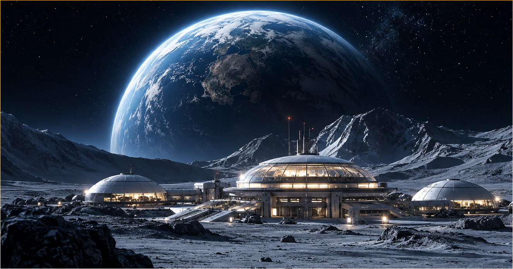
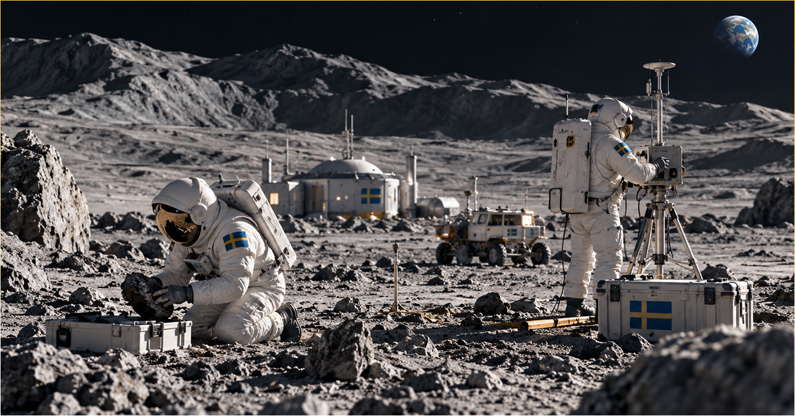
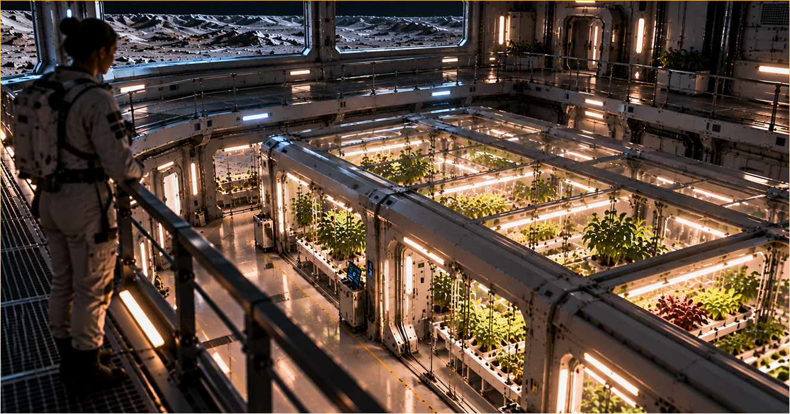

I en av månens mest outforskade regioner söker vi svar på frågor som kan förändra vår förståelse av universum.

Djupt inne i Lacus Mortis, även kallad "Dödens sjö" ligger vår huvudanläggning, på en vidsträckt slätt av stelnad lava. Vårt övergripande mål är att lägga grunden för ett permanent och självförsörjande samhälle på månen. Genom att utforska resurser och utveckla hållbara lösningar vill vi skapa förutsättningar för människor att leva och arbeta här under lång tid.
Lacus Mortis ska inte bara vara en plats för forskning, utan också ett första steg mot framtida bosättningar och en viktig utgångspunkt för människans fortsatta färder längre ut i solsystemet.

Genom avancerad robotik, autonoma system och geologiska undersökningar utforskar vi okända miljöer, analyserar mineraler och kartlägger månens resurser.
Vi utvecklar och testar lösningar för energiförsörjning, vattenåtervinning och
livsuppehållande system.
Forskningen bidrar till ökad kunskap om månens förutsättningar och lägger grunden för framtida
rymdexpeditioner och en långsiktigt hållbar närvaro på månen.

Att leva på Lacus Mortis är mer än ett arbete, det är en vardag i en av människans mest avlägsna miljöer. Varje medarbetare har ett eget rum för vila och avskildhet, medan gemensamma utrymmen erbjuder möjligheter till umgänge, avkoppling och återhämtning.
I stationens växthus odlas färska grödor som både bidrar till besättningens självförsörjning och används i forskning om odling i månens unika miljö. Här förenas vetenskap och vardagsliv, med jorden som en ständig påminnelse om hemmet.